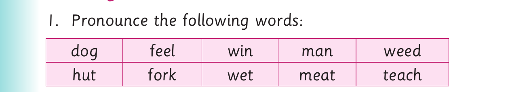

I replace final sounds to form new words
I replace final sounds to form new words.
Activity 1

1. Pronounce the following words: dog feel win man weed hut fork wet meat teach
2. Replace the final sounds of the words in (1). 3. Pronounce the new words you have formed in (2). 4. Read the following sentences aloud: (a) A woman will win a wig. (b) A man sat on a mat. (c) Those who weed their farms will not weep. (d) I will hug my friend near the hut. (e) The spider’s web is wet. (f) We had meat in our meal. (g) Teachers teach as a team.
5. Read the following tongue twister fast: She sells seashells by the seashore.